건축설비기사 (2021-09-12 기출문제)
1과목: 건축일반
1. 표면결로 방지 대책으로 옳지 않은 것은?
- 습한 공기를 제거하기 위해 환기가 잘 되게 한다.
- 벽의 단열성을 좋게 하여 열관류 저항을 크게 한다.
- 실내수증기압을 낮추어 실내공기의 노점온도를 낮게 한다.
- 방습재는 저온측(실외)에, 단열재는 고온측(실내)에 배치한다.
(정답률: 67%)

2. 호텔의 종류 중 연면적에 대한 숙박관계부분의 비율이 일반적으로 가장 큰 것은?
- 클럽하우스
- 산장 호텔
- 스키 호텔
- 커머셜 호텔
(정답률: 80%)
3. 열교(thermal bridge)현상에 관한 설명으로 옳지 않은 것은?
- 벽이나 바닥, 지붕 등의 건축물 부위에 단열이 연속되지 않는 부분이 있을 때 생긴다.
- 열교현상을 줄이기 위해서는 콘크리트 라멘조의 경우 가능한 한 내단열로 시공한다.
- 열교현상이 발생하는 부위는 표면온도가 낮아져서 결로가 쉽게 발생한다.
- 열교현상이 발생하면 전체 단열성이 저하된다.
(정답률: 76%)
4. PS 강재의 조건 중 옳지 않은 것은?
- 고장력 강재이어야 한다.
- 콘크리트와의 부착력이 커야 한다.
- 드럼에서 풀어 사용할 때 잘 퍼져야 한다.
- 릴랙세이션(relaxation)이 커야 한다.
(정답률: 69%)
5. 상점의 바람직한 대지조건과 가장 거리가 먼 것은?
- 2면 이상 도로에 면하지 않은 곳
- 교통이 편리한 곳
- 같은 종류의 상점이 밀집된 곳
- 사람의 눈에 잘 띄는 곳
(정답률: 78%)
6. 주거밀도를 표현하거나 규제하는 용어에 관한 내용으로 옳은 것은?
- 건폐율 = 건축물의 연면적/대지면적×100(%)
- 용적률 = 건축면적/건축물의 연면적×100(%)
- 호수밀도 = 실제가구수/적정수요가구수×100(%)
- 인구밀도 = 인구수/토지면적(인/ha)
(정답률: 70%)
7. 도서관의 출납 시스템에서 자유로운 도서 선택을 할 수 있으나, 관원의 검열을 받고 기록을 남긴 후 열람하는 형식은?
- 자유개가식
- 안전개가식
- 반개가식
- 폐가식
(정답률: 50%)
8. 목구조 부재로서 기둥과 기둥사이에 설치(기둥 사이 연결)하여 수평하중에 대해 구조물의 변형을 방지하는 부재는?
- 가새
- 귀잡이보
- 버팀대
- 도리
(정답률: 64%)
9. 실내 음향설계 시 각 부재의 설계방법으로 옳지 않은 것은?
- 충분한 직접음을 확보하기 위해서는 음원에서 수음점에 이르는 경로에 장애물이 없이 음원을 전망할 수 있어야 한다.
- 반향의 발생을 없게 하기 위해서는 17m 이하의 거리 차이로 하면 양호하나, 그렇게 하면 매우 작은 콘서트 홀이 만들어지므로 벽이나 천장을 흡음처리하거나 확선처리를 하는 것으로 회피한다.
- 음을 실 전체에 균일하게 분포시키기 위해서는 볼록면에나 확산면으로 하는 것이 바람직히다.
- 다목적 홀 등에서는 무대에 가까운 천장을 높게 처리하여 천장에서의 1차 반사음이 객석 내에 효과적으로 도달하도록 천장반사면의 형태나 위치를 고려한다.
(정답률: 43%)
10. 주택의 평면계획에서 공적인 생활을 위한 공간과 가장 거리가 먼 것은?
- 거실
- 서재
- 식당
- 응접실
(정답률: 76%)
11. 백화점 기능의 4영역 특성에 관한 설명으로 옳지 않은 것은?
- 고객권은 서비스 시설 부분으로 대부분 매장에 결합되며 종업원권과는 멀리 떨어진다.
- 종업원권은 매장 외에 상품권과 접하게 된다.
- 상품권은 판매권과 접하여 고객권과는 절대 분리시킨다.
- 판매권은 상품을 전시하여 영업하는 장소이다.
(정답률: 49%)
12. 사무소 건축에서 코어 시스템(Core system)을 채용하는 이유와 가장 거리가 먼 것은?
- 공간의 융통성이 증가한다.
- 구조적인 면에서 유리하다.
- 외관이 경쾌해진다.
- 유효면적이 증가한다.
(정답률: 67%)
13. 다음 지붕평면 중 합각지붕은?
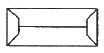
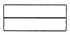
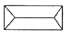
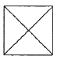
(정답률: 64%)
14. 다음 지붕틀 부재 중 압축응력에 저항하는 부재로만 조합된 것은?
- 층도리, 왕대공
- 지붕보, 달대공
- 빗대공, ㅅ자보
- 평보, 대공
(정답률: 71%)
15. 철골보와 콘크리트 슬래브를 연결하는 전단 연결철물(shear connector)로 사용하는 것은?
- 스터드 볼트
- 고장력 볼트
- 앵커 볼트
- TC 볼트
(정답률: 68%)
16. 한식과 양식주택에 관한 설명으로 옳지 않은 것은?
- 한식주택은 은폐적이며 실의 조합으로 되어 있다.
- 한식주택은 좌식생활이며, 양식주택은 입식생활이다.
- 한식주택의 실은 단일용도이며, 양식주택의 실은 복합용도이다.
- 한식주택의 가구는 부차적 존재이며, 양식주택의 가구는 주요한 내용물이다.
(정답률: 60%)
17. 병실 구성에 관한 설명으로 옳지 않은 것은?
- 병실 내부에는 반사율이 큰 마감재료는 피한다.
- 병실 출입문은 밖여닫이로 하며, 그 폭은 최대 90cm 로 한다.
- 환자마다 옷장 및 테이블 설비를 하는 것이 좋다.
- 침대의 방향은 환자의 눈이 창과 직면하지 않도록 하여 환자의 눈이 부시지 않게 한다.
(정답률: 77%)
18. 풍력환기가 일어나고 있는 실에서 어느 개구부의 풍압계수가 0.3이라고 할 때, 풍압계수 0.3의 의미로 가장 정확한 것은?
- 외부풍의 전압(全壓)의 3%가 풍압력으로 가해진다.
- 외부풍의 전압(全壓)의 30%가 풍압력으로 가해진다.
- 외부풍의 동압(動壓)의 3%가 풍압력으로 가해진다.
- 외부풍의 동압(動壓)의 30%가 풍압력으로 가해진다.
(정답률: 64%)
19. 사무소 공간계획 중 오피스 랜드스케이핑(office landscaping)방식의 장점이 아닌 것은?
- 공간의 절약이 가능하다.
- 변화하는 작업 형태에 대응하기 용이하다.
- 시각적·소음 문제가 없고, 프라이버시가 보장된다.
- 획일적 배치가 아니어서 인간관계 향상과 작업 능률에 도움을 준다.
(정답률: 77%)
20. 학교의 교실배치방식 중 클러스터(cluster)형에 관한 특징으로 옳지 않은 것은?
- 교실 간 간섭 및 소음이 적다.
- 각 교실이 외부와 접하는 면적이 많다.
- 마스터플랜의 융통성이 작다.
- 교실 단위의 독립성이 크다.
(정답률: 66%)
2과목: 위생설비
21. 급탕방식 중 기수혼합식에 관한 설명으로 옳은 것은?
- 물을 열원으로 사용한다.
- 열효율이 낮다는 단점이 있다.
- 공장의 목욕탕 등에 적합하다.
- 소음이 적어 사일렌서를 사용할 필요가 없다.
(정답률: 60%)
22. 다음은 기구배수부하단위에 관한 설명이다. ( ) 안에 알맞은 내용은?
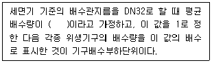
- 12.5 L/min
- 22.5 L/min
- 28.5 L/min
- 35.5 L/min
(정답률: 48%)
23. 다음 중 급수설비에서 크로스 커넥션의 방지 대책으로 가장 알맞은 것은?
- 감압밸브를 설치한다.
- 볼탭을 수위조절밸브로 변경한다.
- 각 계통마다의 배관을 색깔로 구분할 수 있게 한다.
- 위생기구에 연결된 기구급수관에 차단밸브를 설치한다.
(정답률: 70%)
24. 급수방식에 관한 설명으로 옳지 않은 것은?
- 압력탱크방식에서는 저수조가 필요하다.
- 압력탱크방식은 급수압력에 변동이 없는 것이 특징이다.
- 고가탱크방식은 다른 방식에 비해 수질오염에 취약하다.
- 고가탱크방식에서는 중력식으로 각 기구에 급수가 이루어진다.
(정답률: 57%)
25. 다음과 같은 조건에서 어느 건물의 시간 최대 예상급탕량이 4000L/h 일 때, 저탕조 내의 가열코일의 길이는?
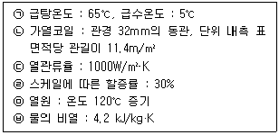
- 약 5.9m
- 약 30.9m
- 약 48.8m
- 약 65.2m
(정답률: 42%)
26. 펌프의 전양정이 30m이며, 양수량이 2000L/min 일 때, 양수펌프의 축동력은? (단, 펌프의 효율은 80% 이다.)
- 약 9.8kW
- 약 12.3kW
- 약 13.3kW
- 약 16.7kW
(정답률: 56%)
27. 먹는물의 수소이온농도 기준으로 옳은 것은? (단, 샘물, 먹는샘물 및 먹는물공동시설의 물이 아닌 경우)
- pH 4.8 이상 pH 8.4 이하
- pH 4.8 이상 pH 8.5 이하
- pH 5.8 이상 pH 8.4 이하
- pH 5.8 이상 pH 8.5 이하
(정답률: 60%)
28. 다음 설명에 알맞은 통기관의 종류는?
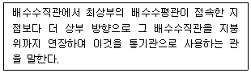
- 신정통기관
- 결합통기관
- 각개통기관
- 공용통기관
(정답률: 62%)
29. 간접가열식 급탕법에 관한 설명으로 옳지 않은 것은?
- 대규모의 급탕설비에 사용할 수 없다.
- 보일러 내면에 스케일의 발생이 적다.
- 가열 보일러를 난방용 보일러와 겸용할 수 있다.
- 가열 보일러로 저압 보일러를 사용해도 되는 경우가 많다.
(정답률: 57%)
30. 물의 경도에 관한 설명으로 옳지 않은 것은?
- 경도의 표시는 도(度) 또는 ppm이 사용된다.
- 경도가 큰 물을 경수, 경도가 낮은 물을 연수라고 한다.
- 일반적으로 물이 접하고 있는 지층의 종류와 관계없이 지표수는 경수, 지하수는 연수로 간주된다.
- 물의 경도는 물 속에 녹아있는 칼슘, 마그네슘 등의 염류의 양을 탄산칼슘의 농도로 환산하여 나타낸 것이다.
(정답률: 65%)
31. 원심식 펌프로 회전차 주위에 디퓨저인 안내 날개를 가지고 있는 펌프는?
- 터빈펌프
- 기어펌프
- 피스톤펌프
- 볼류트펌프
(정답률: 69%)
32. 배수트랩에 관한 설명으로 옳지 않은 것은?
- 트랩의 봉수깊이는 50~100mm가 적절하다.
- 위생기구 중 세면기에는 U트랩이 가장 널리 이용된다.
- P트랩, S트랩 및 U트랩은 사이폰 트랩이라고도 한다.
- 트랩의 봉수깊이란 딥(top dip)과 웨어(crown weir)와의 수직거리를 의미한다.
(정답률: 60%)
33. 급수배관의 설계 및 시공에 관한 설명으로 옳지 않은 것은?
- 급수주관으로부터 배관을 분기하는 경우는 엘보를 사용하여야 한다.
- 주배관에는 적당한 위치에 플랜지 이음을 하여 보수점검을 용이하게 한다.
- 배관의 수리 시 교체가 쉽고 열의 신축에도 대응할 수 있도록 벽이나 바닥을 관통하는 곳에는 슬리브를 설치한다.
- 수평배관에는 공기가 정체하지 않도록 하며, 어쩔 수 없이 공기 정체가 일어나는 곳에는 공기빼기밸브를 설치한다.
(정답률: 61%)
34. 급수배관의 관경 결정법에 관한 설명으로 옳지 않은 것은?
- 같은 급수기구 중에서도 개인용과 공중용에 대한 기구급수부하단위는 공중용이 개인용 보다 값이 크다.
- 유량선도에 의한 방법으로 관경을 결정하고자 할 때의 부하유량(급수량)은 기구급수부하단위로 산정한다.
- 소규모 건물에는 유량선도에 의한 방법이, 중규모 이상의 건물에는 관균등포에 의한 방법이 주로 이용된다.
- 기구급수부하단위는 각 급수기구의 표준 토수량, 사용빈도, 사용시간을 고려하여 1개의 급수기구에 대한 부하의 정도를 예상하여 단위화한 것이다.
(정답률: 57%)
35. 유체에 관한 설명으로 옳지 않은 것은?
- 동점성계수는 점성계수에 비례하고 밀도에 반비례한다.
- 레이놀즈수는 동점성계수 및 관경에 비례하고 유속에 반비례한다.
- 연속의 법칙에 의하면 관의 단면적이 큰 곳은 유속이 작고, 역으로 단면적이 작은 곳에서는 유속이 크게 된다.
- 베르누이의 정리에 의하면 유체가 가지고 있는 속도에너지, 위치에너지 및 압력에너지의 총합은 흐름 내 어디에서나 일정하다.
(정답률: 56%)
36. 펌프에 관한 설명으로 옳은 것은?
- 비속도가 작은 펌프는 양수량의 변화에 따라 양정의 변화도 크다.
- 특성이 같은 펌프를 2대 병렬 운전하면 양정과 양수량은 1대일 경우의 2배가 된다.
- 특성이 같은 펌프를 2대 직렬 운전하면 양수량은 1대일 경우의 2배가 된다.
- 동일펌프로 동일 송수계통에 양수하고 있는 경우 펌프의 회전수가 2배가 되면 양정은 4배가 된다.
(정답률: 46%)
37. 호텔의 주방이나 레스토랑의 주방 등에서 배출되는 배수 중의 지방분을 포집하기 위하여 사용되는 포집기는?
- 오일 포집기
- 가솔린 포집기
- 그리스 포집기
- 플라스터 포집기
(정답률: 69%)
38. 급탕설비의 안전장치에 관한 설명으로 옳지 않은 것은?
- 팽창관의 배수는 간접배수로 한다.
- 팽창관의 도중에는 체크밸브를 설치하여 개폐를 원활하게 한다.
- 팽창관은 보일러, 저탕조 등 밀폐 가열장치 내의 압력상승을 도피시키는 역할을 한다.
- 안전밸브는 가열장치 내의 압력이 설정압력을 넘는 경우에 압력을 도피시키기 위해 탕을 방출하는 밸브이다.
(정답률: 69%)
39. 다음과 같은 특징을 갖는 대변기 세정 급수 방식은?
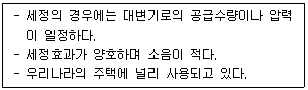
- 로 탱크식
- 기압 탱크식
- 하이 탱크식
- 플러시 밸브식
(정답률: 70%)
40. 처리대상인원 1000인, 1인 1일당 오수량 0.2m3, 오수의 평균 BOD 200ppm, BOD 제거율 85%인 오수처리시설에서 유출수의 BOD는?
- 1.5 kg/day
- 6 kg/day
- 30 kg/day
- 200 kg/day
(정답률: 44%)
3과목: 공기조화설비
41. 진공환수식 증기난방에서 리프트 이음(lift fitting)을 적용하는 경우는?
- 방열기보다 환수주관이 높을 때
- 환수배관법을 역환수식으로 할 때
- 방열기보다 응축수 온도가 너무 높을 때
- 진공펌프를 환수주관보다 낮게 설치할 때
(정답률: 58%)
42. 유리창을 통과하는 전열량에 관한 설명으로 옳지 않은 것은?
- 복사열량과 관류열량의 합이다.
- 반사율이 클수록 전열량은 작아진다.
- 전열량은 유리의 열관류율이 클수록 크게 된다.
- 일사취득열량은 유리창의 차폐계수에 반비례한다.
(정답률: 52%)
43. 수증기를 만드는 원리에 따라 가습장치를 구분할 경우, 다음 중 수분무식에 속하는 것은?
- 전열식
- 모세관식
- 초음파식
- 적외선식
(정답률: 61%)
44. 체크밸브에 관한 설명으로 옳지 않은 것은?
- 유체의 역류를 방지하기 위한 것이다.
- 스윙형 체크밸브를 수평배관에 사용할 수 없다.
- 스윙형 체크밸브는 유수에 대한 마찰저항이 리프트형보다 작다.
- 리프트형 체크밸브는 글로브 밸브와 같은 밸브시트의 구조를 갖는다.
(정답률: 61%)
45. 증기트랩 중 플로트 트랩에 관한 설명으로 옳지 않은 것은?
- 대용량에도 적합하다.
- 응축수를 연속으로 배출시킬 수 있다.
- 플로트를 트랩 내부에 갖고 있어 외형이 크다.
- 증기와 응축수 사이의 온도차를 이용하는 온도조절식 트랩이다.
(정답률: 49%)
46. 온수난방 배관에서 리버스 리턴(Reverse Return)방식을 사용하는 주된 이유는?
- 배관의 신축을 흡수하기 위하여
- 배관의 길이를 짧게 하기 위하여
- 온수의 유량분배를 균일하게 하기 위하여
- 배관내의 공기배출을 용이하게 하기 위하여
(정답률: 69%)
47. 복사난방방식에 관한 설명으로 옳지 않은 것은?
- 다른 난방방식에 비하여 쾌적감이 높다.
- 실내 상하의 온도차가 크다는 단점이 있다.
- 외기침입이 있는 곳에서도 난방감을 얻을 수 있다.
- 열용량이 크기 때문에 간헐난방에는 그다지 적합하지 않다.
(정답률: 44%)
48. 국소환기 설계에 관한 설명으로 옳지 않은 것은?
- 배출된 오염물질에 의한 대기오염이 되지 않도록 정화장치를 부착한다.
- 국소환기의 계통은 공간의 절약을 위해 공조장치의 환기덕트와 연결한다.
- 배기장치는 배기가스에 의해 부식하기 쉬우므로 그에 상응한 재료를 사용한다.
- 배풍기는 배기계통의 말단부에 두어 덕트 내 압력이 부(-)로 되도록 해서 다른 쪽으로의 누출을 방지한다.
(정답률: 59%)
49. 습공기의 엔탈피(Enthalpy)에 관한 설명으로 옳은 것은?
- 습공기의 전압을 나타낸다.
- 습공기의 잠열량을 나타낸다.
- 습공기의 전열량을 나타낸다.
- 습공기의 현열량을 나타낸다.
(정답률: 60%)
50. 사무실의 크기가 10m×10m×3m 이고 재실자가 25명, 가로난로의 CO2 발생량이 0.5m3/h 일 때, 실내평균 CO2 농도를 5000ppm 으로 유지하기 위한 최소 환기횟수는? (단, 재실자 1인당의 CO2 발생량은 18L/h, 외기의 CO2 농도는 800ppm 이다.)
- 약 0.75회/h
- 약 1.25회/h
- 약 1.50회/h
- 약 2.00회/h
(정답률: 41%)
51. 다음 중 콜드 드래프트의 발생원인과 가장 거리가 먼 것은?
- 주의 벽면의 온도가 낮을 때
- 인체 주위의 공기 온도가 낮을 때
- 인체 주위의 공기 습도가 낮을 때
- 인체 주위의 기류 속도가 낮을 때
(정답률: 57%)
52. 건구온도 30℃, 수증기 분압 1.69kPa 인 습공기의 상대습도는? (단, 30℃ 포화공기의 수증기 분압은 4.23kPa 이다.)
- 약 20%
- 약 30%
- 약 40%
- 약 50%
(정답률: 49%)
53. 냉각탑에서 어프로치(approach)에 관한 설명으로 옳은 것은?
- 냉각탑 출구와 입구 수온의 온도차
- 냉각탑 입구와 출구공기의 습구온도차
- 냉각탑 입구의 수온과 출구공기의 습구온도와의 차
- 냉각탑 출구의 수온과 입구공기의 습구온도와의 차
(정답률: 48%)
54. 공기조화용 덕트의 분기부에 설치하여 풍량 조절용으로 사용되나, 정밀한 풍량조절이 불가능하며, 누설이 많아 폐쇄용으로 사용이 곤란한 댐퍼는?
- 루버 댐퍼
- 볼륨 댐퍼
- 스플릿 댐퍼
- 버터플라이 댐퍼
(정답률: 56%)
55. 흡수식 냉동기에 관한 설명으로 옳지 않은 것은?
- 왕복동식 냉공기에 비해 소음이 적다.
- 일반적으로 리튬브로마이드(LiBr)가 냉매로 이용된다.
- 증발기, 흡수기, 재생기(발생기), 응축기 등으로 구성되어 있다.
- 기계적 에너지가 아닌 열에너지에 의해 냉동효과를 얻는다.
(정답률: 52%)
56. 다음과 같은 특징을 갖는 천장취출구는?
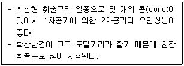
- 팬형
- 노즐형
- 펑커형
- 아네모스탯형
(정답률: 63%)
57. 2중효용 흡수식 냉동기에 관한 설명으로 옳은 것은?
- 응축기가 저온, 고온 응축기로 분리되어 있다.
- 발생기가 저온, 고온 발생기로 분리되어 있다.
- 흡수기가 저온, 고온 흡수기로 분리되어 있다.
- 증발기가 저온, 고온 증발기로 분리되어 있다.
(정답률: 44%)
58. 실의 난방부하가 10kW인 사무실에 설치할 온소난방용 방열기의 필요 섹션수는? (단, 방열기 섹션 1개의 방열면적은 0.20m2로 한다.)
- 74섹션
- 85섹션
- 90섹션
- 96섹션
(정답률: 34%)
59. 난방도일(Heating Degree Day)에 관한 설명으로 옳지 않은 것은?
- 추운 날이 많은 지역일수록 난방도일은 커진다.
- 난방도일이 계산에 있어서 일사량은 고려하지 않는다.
- 난방도일은 난방용 장치부하를 결정하기 위한 것이다.
- 일반적으로 난방도일이 큰 지역일수록 연료소비량은 증가한다.
(정답률: 42%)
60. 다음과 같은 조건에서 환기에 의한 손실열량(현열)은?
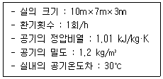
- 1.06kW
- 2.12kW
- 3.82kW
- 7.64kW
(정답률: 37%)
4과목: 소방 및 전기설비
61. 물분무소화설비에 관한 설명으로 옳지 않은 것은?
- 물의 입자를 미세하게 분무시키는 시스템이다.
- 물을 사용하므로 전기화재에는 적응성이 없다.
- 냉각작용을 이용하여 소화효과를 얻을 수 있다.
- 화재 시 발생하는 수증기에 의한 질식작용을 이용하여 소화효과를 얻을 수 있다.
(정답률: 52%)
62. 다음 설명에 알맞은 법칙은?
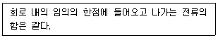
- 옴의 법칙
- 렌쯔의 법칙
- 플레밍의 오른손 법칙
- 키르히호프의 제1법칙
(정답률: 64%)
63. 어떤 회로에서 유효전력 80W, 무효전력 60Var일 때 역률은?
- 70%
- 80%
- 90%
- 100%
(정답률: 58%)
64. 농형 유도전동기에 관한 설명으로 옳지 않은 것은?
- 슬립링에서 불꽃이 나올 우려가 있다.
- VVVF방식으로 속도제어를 할 수 있다.
- 권선형에 비해 구조가 간단하여 취급방법이 용이하다.
- 기동전류가 커서 전동기 권선을 과열시키거나 전원전압의 변동을 일으킬 수 있다.
(정답률: 56%)
65. 옥내소화전방수구는 바닥으로부터의 높이가 최대 얼마 이하가 되도록 설치하여야 하는가?
- 0.9m
- 1.2m
- 1.5m
- 1.8m
(정답률: 59%)
66. 무접점 시컨스 제어 회로에 관한 설명으로 옳지 않은 것은?
- 소형화가 가능하다.
- 동작속도가 빠르다.
- 전기적 노이즈에 대하여 안정적이다.
- 고빈도 사용이 가능하고 수명이 길다.
(정답률: 59%)
67. 천장면을 여러 형태의 사각, 동그라미 등으로 오려내고 다양한 형태의 매입기구를 취부하여 실내의 단조로움을 피하는 건축화 조명 방식은?
- 코퍼 조명
- 코브 조명
- 밸런스 조명
- 코니스 조명
(정답률: 49%)
68. 3상유도전동기의 속도제어방법에 속하지 않는 것은?
- 극수를 변화시키는 방법
- 슬립을 변화시키는 방법
- 주파수를 변화시키는 방법
- 3상 중 2개의 상을 변환 접속하는 방법
(정답률: 57%)
69. 배선설비 공사에서 스위치 및 콘센트 시공에 관한 설명으로 옳지 않은 것은?
- 스위치는 회로의 비접지 측에 시설하여서는 안된다.
- 매입형 콘센트 플레이트는 건축 마감면에 밀착되도록 설치하여야 한다.
- 스위치 설치 높이는 일바적으로 바닥에서 중심까지 1.2m를 기준으로 한다.
- 일반형 콘센트 설치 높이는 바닥에서 기구 중심까지 30cm를 기준으로 한다.
(정답률: 49%)
70. 전기누전에 의한 감전을 방지하기 위하여 행하는 전기 공사는?
- 접지 공사
- 피뢰 공사
- 표시설비 공사
- 옥내 배선 공사
(정답률: 71%)
71. 어떤 저항에 100V의 전압을 가했더니 10A의 전류가 흘렀다. 이 저항에 95V의 전압을 가했을 경우 흐르는 전류는?
- 5A
- 9.5A
- 10.5A
- 15A
(정답률: 70%)
72. 옥내소화전설비가 갖춰진 10층 건물에 있어서 옥내소화전이 각층에 2개씩 설치되어 있다면, 옥내소화전설비의 수원의 저수량은 최소 얼마 이상이 되도록 하여야 하는가?(2021년 04월 01일 개정된 규정 적용됨)
- 5.2m3
- 10.4m3
- 14m3
- 15.6m3
(정답률: 52%)
73. 옥외소화전설비에 관한 설명으로 옳지 않은 것은?
- 호스는 구경 65mm의 것으로 하여야 한다.
- 호스접결구는 지면으로부터 높이가 0.5m 이상 1m 이하의 위치에 설치한다.
- 옥외소화전이 10개 설치된 때에는 옥외소화전 마다 10m 이내의 장소 1개 이상의 소화전함을 설치하여야 한다.
- 호스접결구는 특정소방대상물의 각 부분으로부터 하나의 호스접결구까지의 수평거리가 40m 이하가 되도록 설치하여야 한다.
(정답률: 60%)
74. 양측 금속박 사이에 유전체를 끼워 놓아둔 구조로 정전용량을 갖게 한 소자는?
- 저항
- 콘덴서
- 콘덕턴스
- 인덕턴스
(정답률: 68%)
75. 자동화재탐지설비의 감지기 중 주위의 공기에 일정농도 이상의 연기가 포함되었을 때 동작하는 감지기는?
- 불꽃 감지기
- 차동식 감지기
- 이온화식 감지기
- 보상식 스폿형 감지기
(정답률: 63%)
76. 어떤 코일에 50Hz의 교류 전압을 가할 때 유도 리액턴스가 628Ω이었다. 이 코일의 자기인덕턴스(H)는?
- 2
- 50
- 314
- 628
(정답률: 28%)
77. 어느 도체의 단면에 10분간 360C의 전하가 통과하였다면 전류의 크기는?
- 0.027A
- 0.6A
- 1.67A
- 3.6A
(정답률: 50%)
78. 인화성 액체, 가연성 액체, 타르, 오일 및 인화성 가스와 같은 유류가 타고 나서 재가 남지 않은 화재를 의미하는 것은?
- A급 화재
- B급 화재
- C급 화재
- K급 화재
(정답률: 65%)
79. 건물의 자동제어방식에서 디지털 방식에 속하는 것은?
- 전기방식
- 공기방식
- 자기방식
- DDC방식
(정답률: 71%)
80. 3상유도 전동기의 기동법으로 Y-△기동법을 사용하는 가장 주된 목적은?
- 전압을 높이기 위하여
- 기동전류를 줄이기 위하여
- 전동기의 출력을 높이기 위하여
- 전동기의 동기속도를 높이기 위하여
(정답률: 58%)
5과목: 건축설비관계법규
81. 문화 및 집회시설 중 공연장의 개별 관람실의 출구에 관한 기준 내용으로 옳지 않은 것은? (단, 개별 관람실의 바닥면적이 300m2 이상인 경우)
- 관람실별로 2개소 이상 설치하여야 한다.
- 각 출구의 유효너비는 1.2m 이상으로 한다.
- 관람실로부터 바깥쪽으로의 출구로 쓰이는 문은 안여닥이로 하여서는 안 된다.
- 개별 관람실 출구의 유효너비의 합계는 개별관람실의 바닥면적 100m2 마다 0.6m의 비율로 산정한 너비 이상으로 한다.
(정답률: 51%)
82. 건축물에 급수·배수·환기·난방 등의 건축설비를 설치하는 경우 건축기계설비기술사 또는 공조냉동기계기술사의 협력을 받아야 하는 대상건축물에 속하지 않는 것은?
- 아파트
- 연립주택
- 숙박시설로서 해당 용도에 사용되는 바닥면적의 합계가 2000m2인 건축물
- 판매시설로서 해당 용도에 사용되는 바닥면적의 합계까 2000m2인 건축물
(정답률: 51%)
83. 위험물 저장 및 처리시설에 설치하는 피뢰설비는 한국산업표준이 정하는 피뢰시스템레벨이 최소 얼마 이상이어야 하는가?
- Ⅰ
- Ⅱ
- Ⅲ
- Ⅳ
(정답률: 52%)
84. 특별피난계단의 구조에 관한 기준 내용으로 옳지 않은 것은?
- 계단실에는 예비전원에 의한 조명설비를 할 것
- 계단은 내화구조로 하되, 피난층 또는 지상까지 직접 연결되도록 할 것
- 출입구의 유효너비는 0.9m 이상으로 하고 피난의 방향으로 열 수 있을 것
- 계단실 및 부속실의 실내에 접하는 부분의 마감은 불연재료 또는 준불연재료로 할 것
(정답률: 53%)
85. 주요구조부를 내화구조로 하여야 하는 대상건축물에 속하지 않는 것은?
- 종교시설의 용도로 쓰는 건축물로서 집회실의 바닥면적의 합계가 200m2인 건축물
- 판매시설의 용도로 쓰는 건축물로서 그 용도로 쓰는 바닥면적의 합계가 500m2인 건축물
- 운수시설의 용도로 쓰는 건축물로서 그 용도로 쓰는 바닥면적의 합계가 500m2인 건축물
- 문화 및 집회시설 중 전시장의 용도로 쓰는 건축물로서 그 용도로 쓰는 바닥면적의 합계가 200m2인 건축물
(정답률: 41%)
86. 다음 중 외기에 면하고 1층 또는 지상으로 연결된 출입문을 방풍구조로 하지 않아도 되는 것은? (단, 사람의 통행을 주목적으로 하며, 너비가 1.2m를 초과하는 출입문의 경우)
- 호텔의 주출입문
- 아파트의 출입문
- 공기조화를 하는 업무시설의 출입문
- 바닥면적의 합계가 500m2인 상점의 주출입문
(정답률: 49%)
87. 각종 주택에 관한 설명으로 옳은 것은?
- 다중주택은 공동주택에 속한다.
- 기숙사는 공동주택에 속하지 않는다.
- 다중주택은 독립된 주거의 형태이어야 한다.
- 다가구주택은 1개 동의 주택으로 쓰이는 바닥면적의 합계가 660m2 이하이다.
(정답률: 48%)
88. 건축물의 에너지절약설계기준상 다음과 같이 정의되는 용어는?
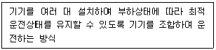
- 인버터운전
- 간헐제어운전
- 비례제어운전
- 대수분할운전
(정답률: 58%)
89. 다음은 초고층 건축물에 설치하는 피난안전구역에 관한 기준 내용이다. ( )안에 알맞은 것은?
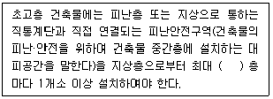
- 10개
- 20개
- 30개
- 40개
(정답률: 60%)
90. 다음 중 대수선에 속하지 않는 것은?
- 내력벽을 증설 또는 해체하는 것
- 기둥 2개를 수선 또는 변경하는 것
- 다세대주택의 세대 간 경계벽을 증설 또는 해체하는 것
- 주계단·피난계단 또는 특별피난계단을 수선 또는 변경하는 것
(정답률: 46%)
91. 높이 기준이 60m인 건축물에서 허용되는 높이의 최대 오차는?
- 0.6m
- 0.9m
- 1.0m
- 1.2m
(정답률: 45%)
92. 다음의 무창층과 관련된 기준 내용 중 밑줄 친 요건으로 옳지 않은 것은?
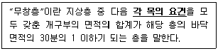
- 도로 또는 차량이 진입할 수 있는 빈터를 향할 것
- 내부 또는 외부에서 쉽게 개방 또는 파괴할 수 없을 것
- 크기는 지름 50cm 이상의 원이 내접할 수 있는 크기일 것
- 해당 층의 바닥면으로부터 개구부 밑부분 까지의 높이가 1.2m 이내일 것
(정답률: 62%)
93. 특별피난계단에 설치하는 배연설비의 구조에 관한 기준 내용으로 옳지 않은 것은?
- 배연구 및 배연풍도는 불연재료로 할 것
- 배연구는 평상사에는 닫힌 상태를 유지할 것
- 배연구는 평상사에 사용하는 굴뚝에 연결할 것
- 배연기는 배연구의 열림에 따라 자동적으로 작동될 것
(정답률: 63%)
94. 건축법령상 용도별 건축물의 종류가 옳지 않은 것은?
- 숙박시설 – 휴양 콘도미니엄
- 제1종 근린생활시설 - 치과의원
- 동물 및 식물관련시설 - 동물원
- 제2종 근린생활시설 – 노래연습장
(정답률: 45%)
95. 특정소방대상물에 설치하여야 하는 소방시설에 관한 설명으로 옳지 않은 것은?
- 노유자 생활시설에는 자동화재속보설비를 설치하여야 한다.
- 연면적 33m2인 음식점에는 소화기구를 설치하여야 한다.
- 연면적 600m2인 종교시설에는 자동화재탐지설비를 설치하여야 한다.
- 바닥면적의 합계가 5000m2인 판매시설의 모든 층에는 스프링클러설비를 설치하여야 한다.
(정답률: 32%)
96. 다음 중 방화구조에 속하지 않는 것은?
- 심벽에 흙으로 맞벽치기한 것
- 철망모르타르로서 그 바름두께가 2cm인 것
- 석고판 위에 회반죽을 바른 것으로서 그 두께의 합계가 2cm인 것
- 시멘트모르타르 위에 타일을 붙인 것으로서 그 두께의 합계가 2.5cm인 것
(정답률: 51%)
97. 연면적 200m2을 초과하는 중·고등학교에 설치하는 복도의 유효너비는 최소 얼마 이상으로 하여야 하는가? (단, 양옆에 거실이 있는 복도의 경우)
- 1.5m 이상
- 1.8m 이상
- 2.1m 이상
- 2.4m 이상
(정답률: 53%)
98. 모든 층에 주거용 주방자동소화장치를 설치하여야 하는 특정소방대상물은?
- 기숙사
- 아파트동
- 견본주택
- 학생복지주택
(정답률: 69%)
99. 연결송수관설비를 설치하여야 하는 특정소방대상물 기준으로 옳은 것은? (단, 위험물 저장 및 처리 시설 중 가스시설 또는 지하구는 제외)
- 층수가 3층 이상으로서 연면적 5000m2 이상인 것
- 층수가 3층 이상으로서 연면적 6000m2 이상인 것
- 층수가 5층 이상으로서 연면적 5000m2 이상인 것
- 층수가 5층 이상으로서 연면적 6000m2 이상인 것
(정답률: 28%)
100. 공동주택과 오피스텔의 난방설비를 개별난방 방식으로 하는 경우에 대한 기준 내용으로 옳은 것은?
- 보일러실의 연도는 방화구조로서 개별연도로 설치할 것
- 보일러실의 윗부분과 아랫부분에는 지름 5cm이상의 공기흡입구 및 배기구를 설치할 것
- 보일러를 설치하는 곳과 거실사이의 경계벽은 출입구를 제외하고는 내화구조의 벽으로 구획할 것
- 전기보일러를 사용하는 경우, 보일러실의 윗부분에는 그 면적이 1m2 이상인 환기창을 설치할 것
(정답률: 36%)
방습재는 습기를 제거하기 위해 사용하고, 벽의 단열성을 높여 열관류 저항을 크게 하고, 실내수증기압을 낮추어 실내공기의 노점온도를 낮게 유지하여 표면결로를 방지하는 것이 옳은 대책이다. 또한 환기를 잘 시켜 습한 공기를 제거하여 표면결로를 방지하는 것도 중요하다.